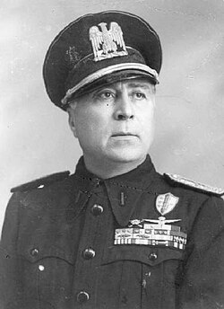

Key Personalities of Italian Fascism
The Leaders, Loyalists, and Opposers Who Shaped Italy's Fascist Era
Historical Portrait: Benito Mussolini (1883-1945)
Benito Mussolini▼
Il Duce – The Supreme Leader
Dictator
Founder of Fascism
Benito Mussolini, a figure synonymous with Italian Fascism, previously served as a socialist journalist before establishing the Fasci Italiani di Combattimento in 1919. This organization subsequently matured into the National Fascist Party. Following the 1922 March on Rome, he ascended to the position of Prime Minister and incrementally shifted Italy towards a single-party autocratic regime. In 1925, Mussolini adopted the appellation "Il Duce," wielding absolute power over Italy until 1943. His administration was characterized by expansionist international designs, a strategic partnership forged with Nazi Germany, and the consequential misfortune of wartime engagement throughout World War II – precipitating Italy's defeat. Deposed from power in 1943, his role was briefly reprised by German forces located towards northern Italy situated solely along strategic puppet lines with this authoritarian regime where Benito had very limited autonomy regarding formal engagement protocols with external leadership arrangements before formal execution led out as administered during approximately late months pertaining towards 1945’s official formal register conducted before Italian citizen’ groups who would carry along any designated affiliation which aligned well-enough with previous orders stemming initially as set under earlier dictatorial provisions wherein said execution then marked conclusive departure upon certain historical benchmarks.
"Fascism should rightly be called Corporatism, as it is the merger of corporate and government power."
— Benito Mussolini
“Everything within the State, nothing outside the State, nothing against the State.”
— Benito Mussolini, “The Doctrine of Fascism,” 1932
— Benito Mussolini, “The Doctrine of Fascism,” 1932
"La nostra formula è questa: tutto nello Stato, niente al di fuori dello Stato, nulla contro lo Stato."
— trans.: “All within the State, nothing outside the State, nothing against the State.”
Benito Mussolini, Discorso dell'Ascensione (Speech to the Chamber of Deputies), 26 May 1927.

Historical Portrait: King Victor Emmanuel III (1869-1947)
Victor Emmanuel III▼
King of Italy
Monarchy
Enabler
Victor Emmanuel III's 46-year reign (1900–1946) over Italy transpired during an era indelibly shaped by shifts on the political landscape, specifically Fascism's emergence. It was the autumn of 1922; against the backdrop of Mussolini's bold march, the king chose not to authorize martial law. This decision to allow Mussolini to become Prime Minister and to head the legitimate government effectively conferred legitimacy on the Fascist movement and had significant unforeseen consequences. This choice solidified the Fascist party. A grim legacy ensued. While largely a ceremonial figure during the following decades, Victor Emmanuel assented to anti-Semitic racial laws in 1938, causing hardship among some residents, as a King would enforce these tough measures. The Italian dictator aligned against Britain and the United States during Mussolini's later decision after 1940, siding politically in World War II. This alignment, along with his previous inaction, connected that old leadership role to severe authoritarian policies. During the Allied invasion of Italy in 1943, Victor lost that office under pressure from his family, who demanded abdication. By spring, close to summer, Victor formally relinquished the throne, though for legacy reasons, his eldest son, Umberto, assumed leadership—though he held control only temporarily, serving as a transitional figure until permanent change, to which people responded by rejecting the monarchy. A dynasty entered decline during this era—Victor had done nothing against Fascist acts beforehand. His contribution helped accelerate harmful developments—though he escaped punishment in his lifetime. This episode later demonstrated how royal authority can be used for ill rather than justice, yet without the penalties that ordinary citizens would face. For the future, the lesson remains: a King may be held accountable for not helping those beyond his immediate circle of influence, particularly those whose lives are affected by power far from them during periods of governance.
"A republican form of government is not suited to the Italian people. They are not prepared for it either temperamentally or historically. In a republic every Italian would insist upon being President, and the result would be chaos. The only people who would profit would be the Communists."
— Victor Emmanuel III, as reported in Robert D. Murphy, Diplomat Among Warriors, Doubleday, New York, 1964, p. 203.
Historical Portrait: Giacomo Matteotti (1885-1924)
Giacomo Matteotti▼
Socialist Deputy & Martyr
Opposition Leader
Victim
Giacomo Matteotti, a socialist politician of significant courage, made himself a noted voice through opposing Fascism. The Parliamentarian stood and fearlessly exposed both Fascist-wielded violence and extensive electoral fraud. His denunciation reached a crescendo, arriving on May 30, 1924 when in the Chamber of Deputies he methodically outlined the pattern and scope of Fascist-led acts of systemic political repression together with episodes outlining brazen-faced, wide-spread governmental graft taking place across Italy's election cycles of the day. Not more than two weeks later—the calendar marking June 10, 1924—Matteotti was kidnapped and subsequently executed by those violent enforcers referred to loosely speaking locally Italian as Squadristi – or roughly, loosely, gang henchmen. A wide domestic internal national crisis unfolded across that space while some saw Mussolini himself and perhaps his regime tumbling down fast, instead what ended-up fact was crisis survival used not reformed things where they fell, rather consolidated gains with near full control as opposition voices found more limited voice by far when taking up this tragic-historical context from those distant times hence before since still stands quite plainly when relooking from retrospective ways even through passing decades time. Matteotti became enduring representation still signifying acts found as either representing symbolic opposition both against/for historical fascistas.
"Badate: il soffocamento della libertà conduce ad errori dei quali il popolo ha provato che sa guarire. La tirannia determina la morte della nazione."
— Giacomo Matteotti, Discorso alla Camera dei Deputati, 30 May 1924 — trans.: “Liberty may make mistakes, but tyranny is the death of a nation.”
Historical Portrait: Italo Balbo (1896-1940)
Italo Balbo▼
Air Marshal & Fascist Quadrumvir
Military Leader
Early Fascist
One of the more alluring, yet contentious, figures of the Fascist regime was Italo Balbo. Subsequent to service in World War I, he played an integral part in organizing the Fascist squads; correspondingly, he acted as one of the four Quadrumvirs of the March on Rome. Having initially functioned as the Blackshirts' commander and then as Minister of Aviation, Balbo soon earned worldwide attention upon having completed various successful transatlantic flights. A complex loyalty existed—despite demonstrated commitment to Fascism, his views diverged in conflict, notably toward the matter of Mussolini's imposed racial regulations alongside allegiance regarding Nazi Germany. Arguably sensing danger due to jealousy, the Premier relegated him to Libya with a high designation. Unfortunately, circa 1940, disaster struck whereunder Italian units accidentally took aim directly; whether that mistake indeed occurred or dark schemes came full circle is still hotly contested amongst scholarly debates, though a final shot found true landing zone regardless now since many decades past the time which would mark a man beyond our modern present day memory unless recorded on some documentary filmed only due to recent technological advances, thus such facts we lack evidence from older sources unless find manuscript buried soon enough, or future scholar finds film archived well.
"Me ne frego." — trans.: "I don't care / I don't give a damn."
— It was adopted as a defiant rallying cry during squadristi attacks on socialist groups and public demonstrations, signaling contempt for opponents and legal constraints. Primary attestations are found in 1920s Arditi songbooks, Blackshirt propaganda leaflets, and contemporary newspapers.
Fascist slogan (originally used by the Arditi and later adopted by the Blackshirts / Fascist movement); commonly attested in Fascist-era songs and propaganda (early 1920s).
Historical Portrait: Galeazzo Ciano (1903-1944)
Galeazzo Ciano▼
Foreign Minister & Mussolini's Son-in-Law
Diplomat
Executed
As a strategic move to solidify partnerships with the Axis nation of Nazi Germany, Galeazzo Ciano, who wed Mussolini's daughter Edda, climbed Italy’s hierarchy and sat high in Fascist Italy’s chambers. Documents show that occupying the function of Foreign Minister, and sitting in that capacity from 1936 up to 1943, Ciano held the important position in arranging not only what history recognizes as The Rome-Berlin Axis but also for orchestrating what became known as The Pact of Steel by which he would associate with Nazi Germany. Historical records account for later disillusionment and demonstrate his growing sense of wariness directed towards German collaboration in all events concerning World War Two and its participants, culminating in opposition, marking for Ciano a firm point of demarcation; his published collections of writings reveal perspectives historians found absolutely helpful in reviewing Fascist leadership’s decision-making processes. Available writings report events and state on into happenings which report that during council events that developed in late 1943, or precisely, near to late June–early July of that Gregorian year in which a grand decision affected Il Duce's situation when Ciano expressed dissent, or voted "No", causing those very happenings which eventually led into developments involving Duce coming finally down—though temporarily until rescued when, in this situation, German leaders reinstated him; there followed episodes whereby arrest orders were produced involving proceedings against former government leaders and their affiliations associated together around supposed acts undermining safety measures, sentencing ultimately towards an established capital punishment position reached sometime during early 1944, but ultimately proving an ignominious happening especially concerning matters where, despite family-relation intervention on her offspring involved whom made frantic desperate, unsuccessful representations for interventions, appeals finally unfortunately amounted towards futile attempts directed towards family elders which would render otherwise favorable assistance.
"As always, victory finds a hundred fathers but defeat is an orphan."
— Written after military setbacks during World War II, reflecting Ciano’s disillusionment with Italy’s leadership and shifting loyalties within the Fascist hierarchy.
Galeazzo Ciano, The Ciano Diaries, 1939–1943 (entry dated 9 February 1942).

Historical Portrait: Roberto Farinacci (1892-1945)
Roberto Farinacci▼
Radical Fascist & Party Secretary
Extremist
Ideologue
Roberto Farinacci’s name evokes images of extreme Fascist violence. Ruling as a ruthless squadristi commander, he directed many brutal attacks aimed toward socialists, liberals, and any political rival standing between Farinacci and a future envisioned where opposition was obliterated. While serving as Party Secretary between 1925 and 1926, moreover, Farinacci consistently championed increased violence accompanied by policies deemed unacceptable according to those even within circles previously amicable with his name—a demonstration highlighting just some parts underlying why exactly it may indeed make sense how eventual descent might loom. As a staunch supporter pushing harder than some wanted relating even ever could for evermore aligning ties tighter relating ever more to some other rising state (Nazi Germany): especially seeing racial dimensions interweave among ever-evolving legal scrawlings regarding “Jewish” groups targeted amid expanding, and quite quickly built biases nationwide. Even the once thought "all-commanding and never changing" Mussolini ultimately recognized, in Roberto Farinacci, that any amount previously used as tools designed towards controlling anyone’s thought risked breaking control measures given any additional nudges toward more total or unrestrained power. Roberto Farinacci continued allegiance shown unwavering, as seen after 1943, where affiliation with groups found themselves dubbed henceforth.
“Rome remains ‘forever against Jerusalem,”
— Roberto Farinacci; Jewish Telegraphic Agency, 9 November 1938. Source: JTA archive bulletin, Nov 9, 1938
Historical Portrait: Dino Grandi (1895-1988)
Dino Grandi▼
Foreign Minister & Grand Council Member
Diplomat
Conspirator
Dino Grandi, though a figure of eventual dissent, held significant positions within the Fascist hierarchy, including those of Foreign Minister and Ambassador to the United Kingdom. Early on, he aligned himself with Fascist principles; however, his faith in Benito Mussolini's command and the prevailing trajectory of Italian leadership diminished, especially when considering the strengthened alliance with Nazi Germany – which proved foundational in propelling Italy onto the battlefield of the Second World War. July 24, 1943, saw the realization of these internal rifts. As convened with the Grand Council of Fascism during a dedicated session, Grandi set forth a calculated measure effectively leading to Mussolini’s dismissal. How did he do this? Through an official motion – passed by a 19-7 vote. Whereupon the ruling authority reassumed its constitutional prerogatives, terminating unapproved directives or personally commandeered oversight duties assigned previously under special provisions. Thereafter, for personal precaution regarding his physical well-being, since German forces had temporarily reinstated leadership policies, Grandi sought protection offshore until formally notified that normal civic protocols would resume under international and national law – that meant residing aboard ships safely away, awaiting updates about future judicial or political proceedings. Returning home shortly after the war, Grandi quietly resumed former civic life without incident during later eras, the duration of which concluded upon his death in 1970.
"In Oriani, my generation found its anxieties, its feelings, its contradictions, its aspirations and its instincts confirmed, and above all explained and clarified."
— Dino Grandi, referring to Alfredo Oriani, a nationalist writer influential to Fascist ideology. Source: Wikipedia article on Alfredo Oriani, citing Grandi's autobiography "Il mio paese: ricordi autobiografici" (1985), p. 41.
Historical Portrait: Marshal Pietro Badoglio (1871-1956)
Pietro Badoglio▼
Marshal of Italy & Prime Minister
Military
Post-Fascist Leader
A key figure in Italy’s 20th-century military history, General Pietro Badoglio (1871–1956) held a prominent, yet contentious, position during Italy’s era of colonial expansion and the tumultuous years between the World Wars. Post-World War I, the veteran assumed significant command roles and became, in 1925, Chief of Staff. By 1928, Badoglio oversaw Italian Libya as Governor-General; his administration brutally repressed any insurgency, employing prohibited chemical agents against native populations. Leading the 1935 invasion of Ethiopia, Badoglio’s forces deployed chemical warfare extensively. Subsequent worldwide outrage confirmed Mussolini's agenda. Although initially a crucial supporting member to Italy's further invasion plans during the latter 1930s—including maneuvers of troops and materials to facilitate control in Spain while the civil war waged overseas, which later caused Badoglio to facilitate seizure by troops under the Fascist regime of countries like Albania by force alone—it seemed, as well, by some accounts and through multiple reliable references, that General Badoglio began increasingly experiencing alienation not only regarding the political ideologies disseminated daily due to leadership practices exerted by Mussolini, even throughout higher military commanding ranks involved in ongoing engagements, and yet later, amidst the military's decreasing fortunes, his prior supportive understanding later resulted in significant critical involvement, primarily in the aftermath of the Fascist period, during the extensive postwar transition toward developing a new governmental role in Italy under more conventional governance protocols. Such duality and multifaceted aspects surrounding the role held require appropriate recognition, acknowledging military accomplishments while taking careful account of the very controversial decisions exercised in colonial affairs, particularly given the consequences arising directly during this historical period affecting multiple generations.
"I have conquered an empire for Italy and Mussolini has thrown it away."
— Pietro Badoglio, expressing his disillusionment with Mussolini's handling of Italy's imperial ambitions.